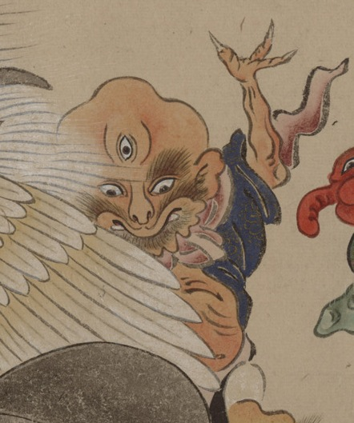

三つ目の化物。禿頭でひげを生やし、三本指の左手を上げている。青い着物をまとっているが、腹は出している。
出典：親書誌：U426_nichibunken_0154：妖怪絵巻；ヨウカイエマキ／日付：2010／資源識別子：U426_nichibunken_0154_0051_0000
Copyright (c)2010- International Research Center for Japanese Studies, Kyoto, Japan. All rights reserved.